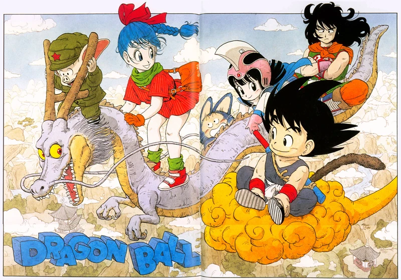
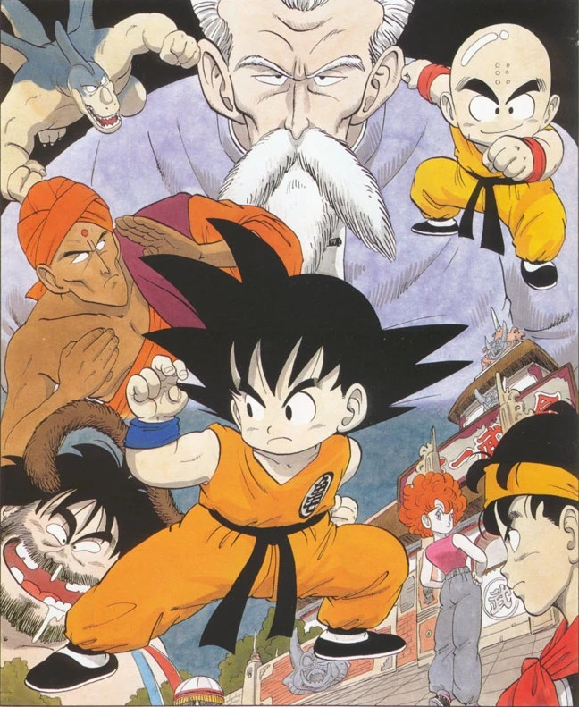
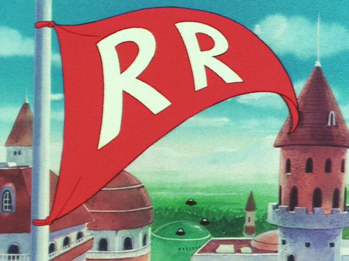
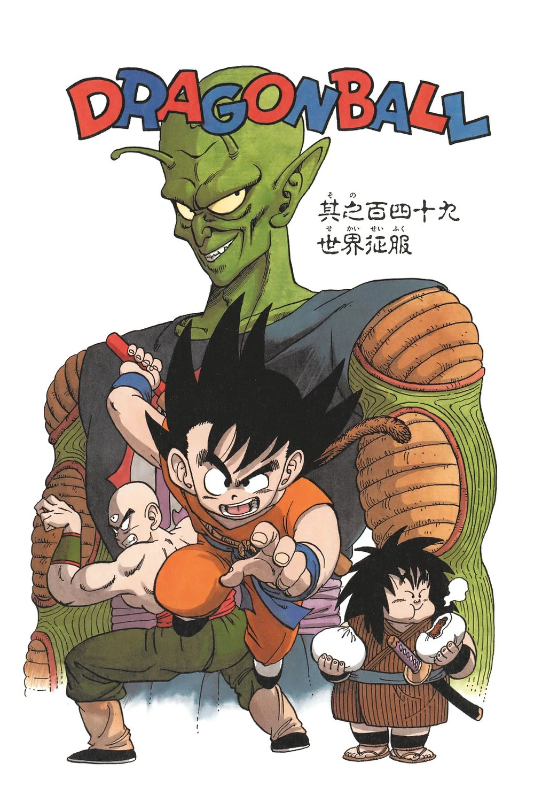
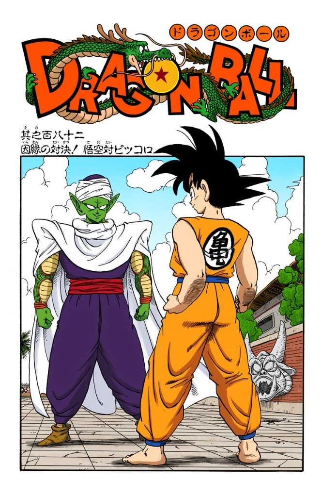

The series begins with a young monkey-tailed boy named Goku who lives alone in a forest befriending a teenage girl named Bulma, who is in search of the seven mystical Dragon Balls (ドラゴンボール), one of which is in Goku's possession.
Together, they go on an adventure to find the balls, which summon the eternal dragon Shenron and grants whoever summons him any wish.
The journey leads Goku to meeting Master Roshi and a confrontation with the shape-shifting pig Oolong, as well as a desert bandit named Yamcha and his companion Pu'ar, and the Ox-King, who all later become allies; Chi-Chi, whom Goku unknowingly agrees to marry; and Emperor Pilaf, a blue-skinned imp who seeks the Dragon Balls to fulfill his desire for world domination.
Oolong stops Pilaf from getting his wish by wishing for a pair of perfect panties.
After each wish, all the Dragon Balls are scattered all over the world and take one full year to take on their distinctive appearance.

After finding the Dragon Balls and using them, Goku undergoes rigorous training under world renowned martial artist Master Roshi in order to fight in the World Martial Arts Tournament (天下一武道会, "Tenkaichi Budōkai"), a competitive fighting tournament that attracts fighters from all around the world.
A monk named Krillin becomes Goku's training partner and rival, but they quickly become best friends.
After training with Master Roshi for a few months, Goku and Krillin start in the tournament, which is held every five years.
They battle through with various opponents and Yamcha fights a mysterious man named Jackie Chun, who looks and fights oddly similar to Master Roshi.
As the tournament continues, Goku and Jackie Chun are the final fighters, and after hours of battle, Jackie Chun realizes Goku is mimicking all of his moves.
Recognizing that Goku is shorter, he lunges a flying kick at Goku.
Knowing that Goku will do one right back, Jackie Chun's longer leg can reliably reach Goku and knock him out, defeating him.

After the tournament, Goku sets out on his own to recover the Dragon Ball his deceased grandfather left him and encounters a terrorist organization known as the Red Ribbon Army, whose diminutive leader, Commander Red, wants to collect the Dragon Balls so he can use them to become taller.
Goku mostly single-handedly defeats the entire group, including Mercenary Tao, a feared assassin the Red Ribbon hired; whom Goku originally loses to, but after training under the hermit Korin, easily beats.
After defeating Tao, Goku reunites with his friends and they go to Fortuneteller Baba to locate the last remaining Dragon Ball in order to resurrect Upa's father, who was defeated by Tao, but they have to defeat all five of Baba's fighters first.
After defeating Baba's fighters and finding the last Dragon Ball, Goku resurrects Upa's father, Bora, and sets out on his own to train for three years.

Goku and his friends reunite at the World Martial Arts Tournament three years later and meet Master Roshi's rival and Tao's brother, Master Shen, and his students Tien Shinhan and Chiaotzu, who vow to exact revenge for Tao's apparent death at the hands of Goku.
Krillin is murdered after the tournament and Goku tracks down and is defeated by his killer, Tambourine, and the evil Demon King Piccolo, who was freed by Emperor Pilaf after being sealed away by Master Mutaito after destroying and trying to take over the world.
Goku meets the overweight samurai Yajirobe, who takes Goku to Korin after being defeated by Tambourine and receives healing and a power boost.
Meanwhile, Piccolo kills both Master Roshi and Chiaotzu, and uses the Dragon Balls to give himself eternal youth before destroying Shenron, which results in the Dragon Balls' destruction.
As King Piccolo prepares to destroy West City as a show of force, Tien Shinhan arrives to confront him, but is defeated and nearly killed by one of Piccolo's spawns.
Goku arrives in time to save Tien and then kills King Piccolo by blasting a hole through his chest.

Just before Piccolo dies, he spawns his final son, Piccolo Junior.
Korin informs Goku that Kami, the creator of the Dragon Balls, might be able to restore Shenron and the Dragon Balls so that Goku can wish his fallen friends back to life, which he does.
He also stays and trains under Kami for the next three years, once again reuniting with his friends for the World Martial Arts Tournament, as well as a now-teenaged Chi-Chi and a revived cyborg Mercenary Tao.
Piccolo Junior enters the tournament to avenge his father, leading to the final battle between him and Goku.
After Goku narrowly wins and defeats Piccolo Junior, he leaves with Chi-Chi and they get married, leading to the events of Dragon Ball Z.